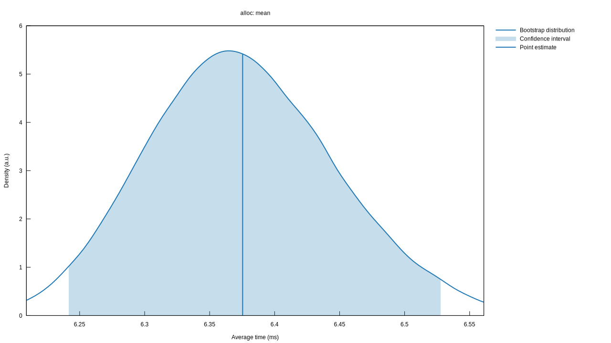
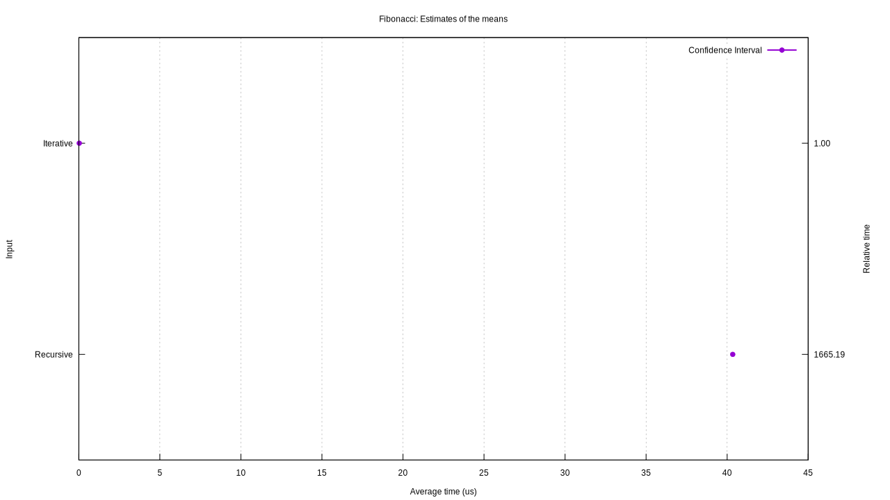
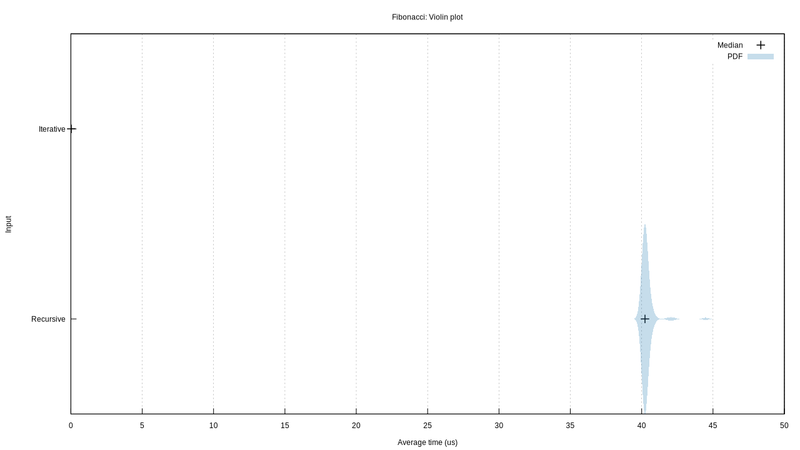

Criterion.rs
Criterion.rs is a statistics-driven micro-benchmarking tool. It is a Rust port of Haskell's Criterion library.
Criterion.rs benchmarks collect and store statistical information from run to run and can automatically detect performance regressions as well as measuring optimizations.
Criterion.rs is free and open source. You can find the source on GitHub. Issues and feature requests can be posted on the issue tracker.
API Docs
In addition to this book, you may also wish to read the API documentation.
License
Criterion.rs is dual-licensed under the Apache 2.0 and the MIT licenses.
Debug Output
To enable debug output in Criterion.rs, define the environment variable CRITERION_DEBUG. For example (in bash):
CRITERION_DEBUG=1 cargo bench
This will enable extra debug output. Criterion.rs will also save the gnuplot scripts alongside the generated plot files. When raising issues with Criterion.rs (especially when reporting issues with the plot generation) please run your benchmarks with this option enabled and provide the additional output and relevant gnuplot scripts.
Getting Started
Step 1 - Add Dependency to cargo.toml
To enable Criterion.rs benchmarks, add the following to your cargo.toml file:
[dev-dependencies]
criterion = "0.1.2"
[[bench]]
name = "my_benchmark"
harness = false
This adds a development dependency on Criterion.rs, and declares a benchmark called my_benchmark without the standard benchmarking harness. It's important to disable the standard benchmark harness, because we'll later add our own and we don't want them to conflict.
Step 2 - Add Benchmark
As an example, we'll benchmark an implementation of the Fibonacci function. Create a benchmark file at $PROJECT/benches/my_benchmark.rs with the following contents (see the Details section below for an explanation of this code):
# #![allow(unused_variables)] #fn main() { #[macro_use] extern crate criterion; use criterion::Criterion; fn fibonacci(n: u64) -> u64 { match n { 0 => 1, 1 => 1, n => fibonacci(n-1) + fibonacci(n-2), } } fn criterion_benchmark(c: &mut Criterion) { c.bench_function("fib 20", |b| b.iter(|| fibonacci(20))); } criterion_group!(benches, criterion_benchmark); criterion_main!(benches); #}
Step 3 - Run Benchmark
To run this benchmark, use the following command:
cargo bench
You should see output similar to this:
Running target/release/deps/example-423eedc43b2b3a93
Benchmarking fib 20
Benchmarking fib 20: Warming up for 3.0000 s
Benchmarking fib 20: Collecting 100 samples in estimated 5.0658 s (188100 iterations)
Benchmarking fib 20: Analyzing
fib 20 time: [26.029 us 26.251 us 26.505 us]
Found 11 outliers among 99 measurements (11.11%)
6 (6.06%) high mild
5 (5.05%) high severe
slope [26.029 us 26.505 us] R^2 [0.8745662 0.8728027]
mean [26.106 us 26.561 us] std. dev. [808.98 ns 1.4722 us]
median [25.733 us 25.988 us] med. abs. dev. [234.09 ns 544.07 ns]
Details
Let's go back and walk through that benchmark code in more detail.
# #![allow(unused_variables)] #fn main() { #[macro use] extern crate criterion; use criterion::Criterion; #}
First, we declare the criterion crate and import the Criterion type. Criterion is the main type for the Criterion.rs library. It provides methods to configure and define groups of benchmarks.
# #![allow(unused_variables)] #fn main() { fn fibonacci(n: u64) -> u64 { match n { 0 => 1, 1 => 1, n => fibonacci(n-1) + fibonacci(n-2), } } #}
Second, we define the function to benchmark. In normal usage, this would be imported from elsewhere in your crate, but for simplicity we'll just define it right here.
# #![allow(unused_variables)] #fn main() { fn criterion_benchmark(c: &mut Criterion) { #}
Here we create a function to contain our benchmark code. The name of the benchmark function doesn't matter, but it should be clear and understandable.
# #![allow(unused_variables)] #fn main() { c.bench_function("fib 20", |b| b.iter(|| fibonacci(20))); } #}
This is where the real work happens. The bench_function method defines a benchmark with a name and a closure. The name should be unique among all of the benchmarks for your project. The closure must accept one argument, a Bencher. The bencher performs the benchmark - in this case, it simply calls our fibonacci function in a loop. There are a number of other benchmark functions, including the option to benchmark with arguments, to benchmark external programs and to compare the performance of two functions. See the API documentation for details on all of the different benchmarking options.
# #![allow(unused_variables)] #fn main() { criterion_group!(benches, criterion_benchmark); criterion_main!(benches); #}
Here we invoke the criterion_group! (link) macro to generate a benchmark group called benches, containing the criterion_benchmark function defined earlier. Finally, we invoke the criterion_main! (link) macro to generate a main function which executes the benches group. See the API documentation for more information on these macros.
Step 4 - Optimize
This fibonacci function is quite inefficient. We can do better:
# #![allow(unused_variables)] #fn main() { fn fibonacci(n: u64) -> u64 { let mut a = 0u64; let mut b = 1u64; let mut c = 0u64; if n == 0 { return 0 } for _ in 0..(n+1) { c = a + b; a = b; b = c; } return b; } #}
Running the benchmark now produces output like this:
Running target/release/deps/example-423eedc43b2b3a93
Benchmarking fib 20
Benchmarking fib 20: Warming up for 3.0000 s
Benchmarking fib 20: Collecting 100 samples in estimated 5.0000 s (13548862800 iterations)
Benchmarking fib 20: Analyzing
fib 20 time: [353.59 ps 356.19 ps 359.07 ps]
change: [-99.999% -99.999% -99.999%] (p = 0.00 < 0.05)
Performance has improved.
Found 6 outliers among 99 measurements (6.06%)
4 (4.04%) high mild
2 (2.02%) high severe
slope [353.59 ps 359.07 ps] R^2 [0.8734356 0.8722124]
mean [356.57 ps 362.74 ps] std. dev. [10.672 ps 20.419 ps]
median [351.57 ps 355.85 ps] med. abs. dev. [4.6479 ps 10.059 ps]
As you can see, Criterion is statistically confident that our optimization has made an improvement. If we introduce a performance regression, Criterion will instead print a message indicating this.
Known Limitations
There are currently a number of limitations to the use of Criterion.rs relative to the standard benchmark harness.
First, it is necessary for Criterion.rs to provide its own main function using the criterion_main macro. This means that it's not currently possible to include benchmarks in the src/ directory.
Second, Criterion.rs provides a stable-compatible replacement for the black_box function provided by the standard test crate. This replacement is not as reliable as the official one, and it may allow dead-code-elimination to affect the benchmarks in some circumstances. If you're using a Nightly build of Rust, you can add the real_blackbox feature to your dependency on Criterion.rs to use the standard black_box function instead.
Example:
criterion = { version = '...', features=['real_blackbox'] }
User Guide
This chapter covers the output produced by Criterion.rs benchmarks, both the command-line reports and the charts. It also details more advanced usages of Criterion.rs such as benchmarking external programs and comparing the performance of multiple functions.
Migrating from libtest
This page shows an example of converting a libtest or bencher benchmark to use Criterion.rs.
The Benchmark
We'll start with this benchmark as an example:
# #![allow(unused_variables)] #![feature(test)] #fn main() { extern crate test; use test::Bencher; fn fibonacci(n: u64) -> u64 { match n { 0 => 1, 1 => 1, n => fibonacci(n-1) + fibonacci(n-2), } } #[bench] fn bench_fib(b: &mut Bencher) { b.iter(|| fibonacci(20)); } #}
The Migration
The first thing to do is update the Cargo.toml to disable the libtest
benchmark harness:
[[bench]]
name = "example"
harness = false
The next step is to update the imports:
# #![allow(unused_variables)] #fn main() { #[macro_use] extern crate criterion; use criterion::Criterion; #}
Then, we can change the bench_fib function. Remove the #[bench] and change
the argument to &mut Criterion instead. The contents of this function need to
change as well:
# #![allow(unused_variables)] #fn main() { fn bench_fib(c: &mut Criterion) { c.bench_function("fib 20", |b| b.iter(|| fibonacci(20))); } #}
Finally, we need to invoke some macros to generate a main function, since we no longer have libtest to provide one:
# #![allow(unused_variables)] #fn main() { criterion_group(benches, bench_fib); criterion_main(benches); #}
And that's it! The complete migrated benchmark code is below:
# #![allow(unused_variables)] #fn main() { #[macro_use] extern crate criterion; use criterion::Criterion; fn fibonacci(n: u64) -> u64 { match n { 0 => 1, 1 => 1, n => fibonacci(n-1) + fibonacci(n-2), } } fn bench_fib(c: &mut Criterion) { c.bench_function("fib 20", |b| b.iter(|| fibonacci(20))); } criterion_group!(benches, bench_fib); criterion_main!(benches); #}
Command-Line Output
The output for this page was produced by running cargo bench -- --verbose.
cargo bench omits some of this information.
Every Criterion.rs benchmark calculates statistics from the measured iterations and produces a report like this:
Benchmarking alloc
Benchmarking alloc: Warming up for 1.0000 s
Benchmarking alloc: Collecting 100 samples in estimated 9.8358 s (9900 iterations)
Benchmarking alloc: Analyzing
alloc time: [858.09 us 865.57 us 873.66 us]
change: [-12.136% -9.0821% -6.0108%] (p = 0.00 < 0.05)
Performance has improved.
Found 6 outliers among 99 measurements (6.06%)
4 (4.04%) high mild
2 (2.02%) high severe
slope [858.09 us 873.66 us] R^2 [0.8194613 0.8182567]
mean [869.79 us 900.69 us] std. dev. [40.794 us 112.68 us]
median [856.23 us 873.03 us] med. abs. dev. [29.124 us 52.521 us]
Warmup
Every Criterion.rs benchmark iterates the benchmarked function automatically for a configurable warmup period (by default, for three seconds). For Rust function benchmarks, this is to warm up the processor caches and (if applicable) file system caches. For external program benchmarks, it can also be used to warm up JIT compilers.
Collecting Samples
Criterion iterates the function to be benchmarked with a varying number of iterations to generate an estimate of the time taken by each iteration. The number of samples is configurable. It also prints an estimate of the time the sampling process will take based on the time per iteration during the warmup period.
Time
time: [858.09 us 865.57 us 873.66 us]
This shows a confidence interval over the measured per-iteration time for this benchmark. The left and right values show the lower and upper bounds of the confidence interval respectively, while the center value shows Criterion.rs' best estimate of the time taken for each iteration of the benchmarked routine.
The confidence level is configurable. A greater confidence level (eg. 99%) will widen the interval and thus provide the user with less information about the true slope. On the other hand, a lesser confidence interval (eg. 90%) will narrow the interval but then the user is less confident that the interval contains the true slope. 95% is generally a good balance.
Criterion.rs performs bootstrap resampling to generate these confidence intervals. The number of bootstrap samples is configurable, and defaults to 100,000.
Change
When a Criterion.rs benchmark is run, it saves statistical information in the .criterion directory. Subsequent executions of the benchmark will load this data and compare it with the current sample to show the effects of changes in the code.
change: [-12.136% -9.0821% -6.0108%] (p = 0.00 < 0.05)
Performance has improved.
This shows a confidence interval over the difference between this run of the benchmark and the last one, as well as the probability that the measured difference could have occurred by chance. These lines will be omitted if no saved data could be read for this benchmark.
The second line shows a quick summary. This line will indicate that the performance has improved or regressed if Criterion.rs has strong statistical evidence that this is the case. It may also indicate that the change was within the noise threshold. Criterion.rs attempts to reduce the effects of noise as much as possible, but differences in benchmark environment (eg. different load from other processes, memory usage, etc.) can influence the results. For highly-deterministic benchmarks, Criterion.rs can be sensitive enough to detect these small fluctuations, so benchmark results that overlap the range +-noise_threshold are assumed to be noise and considered insignificant. The noise threshold is configurable, and defaults to +-2%.
Additional examples:
alloc time: [1.2421 ms 1.2540 ms 1.2667 ms]
change: [+40.772% +43.934% +47.801%] (p = 0.00 < 0.05)
Performance has regressed.
alloc time: [1.2508 ms 1.2630 ms 1.2756 ms]
change: [-1.8316% +0.9121% +3.4704%] (p = 0.52 > 0.05)
No change in performance detected.
benchmark time: [442.92 ps 453.66 ps 464.78 ps]
change: [-0.7479% +3.2888% +7.5451%] (p = 0.04 > 0.05)
Change within noise threshold.
Detecting Outliers
Found 6 outliers among 99 measurements (6.06%)
4 (4.04%) high mild
2 (2.02%) high severe
Criterion.rs attempts to detect unusually high or low samples and reports them as outliers. A large number of outliers suggests that the benchmark results are noisy and should be viewed with appropriate skepticism. In this case, you can see that there are some samples which took much longer than normal. This might be caused by unpredictable load on the computer running the benchmarks, thread or process scheduling, or irregularities in the time taken by the code being benchmarked.
In order to ensure reliable results, benchmarks should be run on a quiet computer and should be designed to do approximately the same amount of work for each iteration. If this is not possible, consider increasing the measurement time to reduce the influence of outliers on the results at the cost of longer benchmarking period. Alternately, the warmup period can be extended (to ensure that any JIT compilers or similar are warmed up) or other iteration loops can be used to perform setup before each benchmark to prevent that from affecting the results.
Additional Statistics
slope [858.09 us 873.66 us] R^2 [0.8194613 0.8182567]
mean [869.79 us 900.69 us] std. dev. [40.794 us 112.68 us]
median [856.23 us 873.03 us] med. abs. dev. [29.124 us 52.521 us]
This shows additional confidence intervals based on other statistics.
Criterion.rs performs a linear regression to calculate the time per iteration. The first line shows the confidence interval of the slopes from the linear regressions, while the R^2 area shows the goodness-of-fit values for the lower and upper bounds of that confidence interval. If the R^2 value is low, this may indicate the benchmark isn't doing the same amount of work on each iteration. You may wish to examine the plot output and consider improving the consistency of your benchmark routine.
The second line shows confidence intervals on the mean and standard deviation of the per-iteration times (calculated naively). If std. dev. is large compared to the time values from above, the benchmarks are noisy. You may need to change your benchmark to reduce the noise.
The median/med. abs. dev. line is similar to the mean/std. dev. line, except that it uses the median and median absolute deviation. As with the std. dev., if the med. abs. dev. is large, this indicates the benchmarks are noisy.
A Note Of Caution
Criterion.rs is designed to produce robust statistics when possible, but it can't account for everything. For example, the performance improvements and regressions listed in the above examples were created just by switching my laptop between battery power and wall power rather than changing the code under test. Care must be taken to ensure that benchmarks are performed under similar conditions in order to produce meaningful results.
Command Line Options
This is a list of the most common options. Run cargo bench -- -h to see a
full list.
- To filter benchmarks, use "cargo bench -- $FILTER" where $FILTER is a
substring of the benchmark ID. For example, running
cargo bench -- fib_20would only run benchmarks whose ID contains the stringfib_20 - To print more detailed output, use
cargo bench -- --verbose - To disable colored output, use
cargo bench -- --color never
Plots & Graphs
If gnuplot is installed, Criterion.rs can generate a number of useful charts and graphs which you can check to get a better understanding of the behavior of the benchmark.
File Structure
The plots and saved data are stored under .criterion/$BENCHMARK_NAME/. Here's an example of the folder structure:
$BENCHMARK/
├── base/
│ ├── estimates.json
│ ├── MAD.svg
│ ├── mean.svg
│ ├── median.svg
│ ├── pdf.svg
│ ├── regression.svg
│ ├── sample.json
│ ├── SD.svg
│ ├── slope.svg
│ └── tukey.json
├── both/
│ ├── pdf.svg
│ └── regression.svg
├── change/
│ ├── estimates.json
│ ├── mean.svg
│ ├── median.svg
│ └── t-test.svg
└── new/
├── estimates.json
├── MAD.svg
├── mean.svg
├── median.svg
├── pdf.svg
├── regression.svg
├── sample.json
├── SD.svg
├── slope.svg
└── tukey.json
The new folder contains the statistics and plots for the last benchmarking run, while the base folder contains those for the previous run. Criterion.rs only keeps historical data for two runs. The both folder contains plots which show both runs on one plot, while the change folder contains plots showing the differences between the two runs. This example shows the plots produced by the default bench_function benchmark method. Other methods may produce additional charts, which will be detailed in their respective pages.
MAD/Mean/Median/SD/Slope

These are the simplest of the plots generated by Criterion.rs. They display the bootstrapped distributions and confidence intervals for the given statistics.
Regression

The regression plot shows each data point plotted on an X-Y plane showing the number of iterations vs the time taken. It also shows the line representing Criterion.rs' best guess at the time per iteration. A good benchmark will show the data points all closely following the line. If the data points are scattered widely, this indicates that there is a lot of noise in the data and that the benchmark may not be reliable. If the data points follow a consistent trend but don't match the line (eg. if they follow a curved pattern or show several discrete line segments) this indicates that the benchmark is doing different amounts of work depending on the number of iterations, which prevents Criterion.rs from generating accurate statistics and means that the benchmark may need to be reworked.
The combined regression plot in the both folder shows only the regression lines and is a useful visual indicator of the difference in performance between the two runs.
The PDF chart shows the probability distribution function for the samples. It also shows the ranges used to classify samples as outliers. In this example (as in the regression example above) we can see that the performance trend changes noticeably below ~35 iterations, which we may wish to investigate.
Benchmarking With Inputs
Criterion.rs can run benchmarks with multiple different input values to investigate how the performance behavior changes with different inputs.
# #![allow(unused_variables)] #fn main() { static KB: usize = 1024; Criterion::default() .bench_function_over_inputs("from_elem", |b, &&size| { b.iter(|| iter::repeat(0u8).take(size).collect::<Vec<_>>()); }, &[KB, 2 * KB, 4 * KB, 8 * KB, 16 * KB]) #}
In this example, we're benchmarking the time it takes to collect a iterator producing a sequence of N bytes into a Vec. We use the bench_function_over_inputs method. Unlike bench_function, the lambda here takes a Bencher and a reference to a parameter, in this case size. Finally, we provide a slice of potential input values. This generates five benchmarks, named "from_elem/1024" through "from_elem/16384" which individually behave the same as any other benchmark. Criterion.rs also generates some charts in .criterion/$BENCHMARK/summary/ showing how the iteration time changes as a function of the input.

Here we can see that there is a approximately-linear relationship between the length of an iterator and the time taken to collect it into a Vec.
Comparing Functions
Criterion.rs can automatically benchmark multiple implementations of a function and produce summary graphs to show the differences in performance between them. First, lets create a comparison benchmark.
# #![allow(unused_variables)] #fn main() { fn fibonacci_slow(n: u64) -> u64 { match n { 0 => 1, 1 => 1, n => fibonacci_slow(n-1) + fibonacci_slow(n-2), } } fn fibonacci_fast(n: u64) -> u64 { let mut a = 0u64; let mut b = 1u64; let mut c = 0u64; if n == 0 { return 0 } for _ in 0..(n+1) { c = a + b; a = b; b = c; } return b; } #}
These are the same two fibonacci functions from the Getting Started page. The difference here is that we import the Fun type as well.
# #![allow(unused_variables)] #fn main() { fn fibonaccis(c: &mut Criterion) { let fib_slow = Fun::new("Recursive", |b, i| b.iter(|| fibonacci_slow(*i))); let fib_fast = Fun::new("Iterative", |b, i| b.iter(|| fibonacci_fast(*i))); #}
Here, we create two benchmark functions which simply call our two Fibonacci implementations. Notice that the closure takes two arguments - b is the Bencher as in other examples, and i is the input parameter to be given to the benchmarked function.
# #![allow(unused_variables)] #fn main() { let functions = vec!(fib_slow, fib_fast); c.bench_functions("Fibonacci", functions, &20); } #}
Finally, we construct a Vec of the benchmark functions and run the benchmark. This performs two benchmarks ("Fibonacci/Recursive" and "Fibonacci/Iterative") which individually behave the same as other benchmarks seen earlier. In addition to the usual set of plots generated for each individual benchmark, this will generate a set of summary plots at .criterion/$BENCHMARK/Summary highlighting the differences between the functions.
Means/Medians/Slopes

These charts show the absolute and relative differences in the appropriate statistics between the implementations. Here we can see that the recursive implementation took 40 microseconds per iteration, which is 1665 times slower than the iterative implementation.
Violin Plot

The Violin Plot shows the median times and the PDF of each implementation.
Benchmarking External Programs
Criterion.rs has the ability to benchmark external programs (which may be written in any language) the same way that it can benchmark rust functions. What follows is an example of how that can be done and some of the pitfalls to avoid along the way.
First, let's define our recursive Fibonacci function, only in Python this time:
def fibonacci(n):
if n == 0 or n == 1:
return 1
return fibonacci(n-1) + fibonacci(n-2)
In order to benchmark this with Criterion.rs, we first need to write our own small benchmarking harness. I'll start with the complete code for this and then go over it in more detail:
import time
import sys
MILLIS = 1000
MICROS = MILLIS * 1000
NANOS = MICROS * 1000
def benchmark():
argument = int(sys.argv[1])
for line in sys.stdin:
iters = int(line.strip())
# Setup
start = time.perf_counter()
for x in range(iters):
fibonacci(argument)
end = time.perf_counter()
# Teardown
delta = end - start
nanos = int(delta * NANOS)
print("%d" % nanos)
sys.stdout.flush()
benchmark()
The important part is the benchmark() function.
The Argument
argument = int(sys.argv[1])
This example uses the Criterion::bench_program_over_inputs function to benchmark our Python Fibonacci function with a variety of inputs. The external program recieves the input value as a command-line argument appended to the command specified in the benchmark, so the very first thing our benchmark harness does is parse that argument into an integer. If we used bench_program instead, there would be no argument.
Reading from stdin
for line in sys.stdin:
iters = int(line.strip())
Next, our harness reads a line from stdin and parses it into an integer. Starting an external process is slow, and it would mess with our measurements if we had to do so for each iteration of the benchmark. Besides which, it would obscure the results (since we're probably more interested in the performance of the function without the process-creation overhead). Therefore, Criterion.rs starts the process once per input value or benchmark and sends the iteration counts to the external program on stdin. Your external benchmark harness must read and parse this iteration count and call the benchmarked function the appropriate number of times.
Setup
If your benchmarked code requires any setup, this is the time to do that.
Timing
start = time.perf_counter()
for x in range(iters):
fibonacci(argument)
end = time.perf_counter()
This is the heart of the external benchmark harness. We measure how long it takes to execute our Fibonacci function with the given argument in a loop, iterating the given number of times. It's important here to use the most precise timer available. We'll need to report the measurement in nanoseconds later, so if you can use a timer that returns a value in nanoseconds (eg. Java's System.nanoTime()) we can skip a bit of work later. It's OK if the timer can't measure to nanosecond precision (most PC's can't) but use the best timer you have.
Teardown
If your benchmarked code requires any teardown, this is the time to do that.
Reporting
delta = end - start
nanos = int(delta * NANOS)
print("%d" % nanos)
sys.stdout.flush()
To report the measured time, simply print the elapsed number of nanoseconds to stdout. perf_counter reports its results as a floating-point number of seconds, so we first convert it to an integer number of nanoseconds before printing it.
Beware Buffering: Criterion.rs will wait until it recieves the measurement before sending the next iteration count. If your benchmarks seem to be hanging during the warmup period, it may be because your benchmark harness is buffering the output on stdout, as Python does here. In this example we explicitly force Python to flush the buffer; you may need to do the same in your benchmarks.
Defining the Benchmark
If you've read the earlier pages, this will be quite familiar.
# #![allow(unused_variables)] #fn main() { use criterion::Criterion; use std::process::Command; fn create_command() -> Command { let mut command = Command::new("python3"); command.arg("benches/external_process.py"); command } fn python_fibonacci(c: &mut Criterion) { c.bench_program_over_inputs("fibonacci-python", create_command, &[1, 2, 4, 8, 16]); } #}
As before, we create a Criterion struct and use it to define our benchmark. This time, we use the bench_program_over_inputs method. This takes a function (used to create the Command which represents our external program) and an iterable containing the inputs to test. Aside from the use of a Command rather than a closure, this behaves just like (and produces the same output as) bench_function_over_inputs.
If your benchmark doesn't require input, simply omit the input values and use bench_program instead, which behaves like bench_function.
Analysis Process
This page details the data collection and analysis process used by Criterion.rs. This is a bit more advanced than the user guide; it is assumed the reader is somewhat familiar with statistical concepts. In particular, the reader should know what bootstrap sampling means.
So, without further ado, let's start with a general overview. Each benchmark in Criterion.rs goes through four phases:
- Warmup - The routine is executed repeatedly to fill the CPU and OS caches and (if applicable) give the JIT time to compile the code
- Measurement - The routine is executed repeatedly and the execution times are recorded
- Analysis - The recorded samples are analyzed and distilled into meaningful statistics, which are then reported to the user
- Comparison - The performance of the current run is compared to the stored data from the last run to determine whether it has changed, and if so by how much
Warmup
The first step in the process is warmup. In this phase, the routine is executed repeatedly to give the OS, CPU and JIT time to adapt to the new workload. This helps prevent things like cold caches and JIT compilation time from throwing off the measurements later. The warmup period is controlled by the warm_up_time value in the Criterion struct.
The warmup period is quite simple. The routine is executed once, then twice, four times and so on until the total accumulated execution time is greater than the configured warm up time. The number of iterations that were completed during this period is recorded, along with the elapsed time.
Measurement
The measurement phase is when Criterion.rs collects the performance data that will be analyzed and used in later stages. This phase is mainly controlled by the measurement_time value in the Criterion struct.
The measurements are done in a number of samples (see the sample_size parameter). Each sample consists of one or more (typically many) iterations of the routine. The elapsed time between the beginning and the end of the iterations, divided by the number of iterations, gives an estimate of the time taken by each iteration.
As measurement progresses, the sample iteration counts are increased. Suppose that the first sample contains 10 iterations. The second sample will contain 20, the third will contain 30 and so on. More formally, the iteration counts are calculated like so:
iterations = [d, 2d, 3d, ... Nd]
Where N is the total number of samples and d is a factor, calculated from the rough estimate of iteration time measured during the warmup period, which is used to scale the number of iterations to meet the configured measurement time. Note that d cannot be less than 1, and therefore the actual measurment time may exceed the configured measurement time if the iteration time is large or the configured measurement time is small.
Note that Criterion.rs does not measure each individual iteration, only the complete sample. The resulting samples are stored for use in later stages. The sample data is also written to the local disk so that it can be used in the comparison phase of future benchmark runs.
Analysis
During this phase Criterion.rs calculates useful statistics from the samples collected during the measurement phase.
Outlier Classification
The first step in analysis is outlier classification. Each sample is classified using a modified version of Tukey's Method, which will be summarized here. First, the interquartile range (IQR) is calculated from the difference between the 25th and 75th percentile. In Tukey's Method, values less than (25th percentile - 1.5 * IQR) or greater than (75th percentile + 1.5 * IQR) are considered outliers. Criterion.rs creates additional fences at (25pct - 3 * IQR) and (75pct + 3 * IQR); values outside that range are considered severe outliers.
Outlier classification is important because the analysis method used to estimate the average iteration time is sensitive to outliers. Thus, when Criterion.rs detects outliers, a warning is printed to inform the user that the benchmark may be less reliable. Additionally, a plot is generated showing which data points are considered outliers, where the fences are, etc.
Note, however, that outlier samples are not dropped from the data, and are used in the following analysis steps along with all other samples.
Linear Regression
The samples collected from a good benchmark should form a rough line when plotted on a chart showing the number of iterations and the time for each sample. The slope of that line gives an estimate of the time per iteration. A single estimate is difficult to interpret, however, since it contains no context. A confidence interval is generally more helpful. In order to generate a confidence interval, a large number of bootstrap samples are generated from the measured samples. A line is fitted to each of the bootstrap samples, and the result is a statistical distribution of slopes that gives a reliable confidence interval around the single estimate calculated from the measured samples.
This resampling process is repeated to generate the mean, standard deviation, median and median absolute deviation of the measured iteration times as well. All of this information is printed to the user and charts are generated. Finally, if there are saved statistics from a previous run, the two benchmark runs are compared.
Comparison
In the comparison phase, the statistics calculated from the current benchmark run are compared against those saved by the previous run to determine if the performance has changed in the meantime, and if so, by how much.
Once again, Criterion.rs generates many bootstrap samples, based on the measured samples from the two runs. The new and old bootstrap samples are compared and their T score is calculated using a T-test. The fraction of the bootstrapped T scores which are more extreme than the T score calculated by comparing the two measured samples gives the probability that the observed difference between the two sets of samples is merely by chance. Thus, if that probability is very low or zero, Criterion.rs can be confident that there is truly a difference in execution time between the two samples. In that case, the mean and median differences are bootstrapped and printed for the user, and the entire process begins again with the next benchmark.
This process can be extremely sensitive to changes, especially when combined with a small, highly deterministic benchmark routine. In these circumstances even very small changes (eg. differences in the load from background processes) can change the measurements enough that the comparison process detects an optimization or regression. Since these sorts of unpredictable fluctuations are rarely of interest while benchmarking, there is also a configurable noise threshold. Optimizations or regressions within (for example) +-1% are considered noise and ignored. It is best to benchmark on a quiet computer where possible to minimize this noise, but it is not always possible to eliminate it entirely.
Frequently Asked Questions
How Should I Run Criterion.rs Benchmarks In A CI Pipeline?
Criterion.rs benchmarks can be run as part of a CI pipeline just as they
normally would on the command line - simply run cargo bench.
To compare the master branch to a pull request, you could run the benchmarks on the master branch to set a baseline, then run them again with the pull request branch. An example script for Travis-CI might be:
#!/usr/bin/env bash
if [ "${TRAVIS_PULL_REQUEST_BRANCH:-$TRAVIS_BRANCH}" != "master" ] && [ "$TRAVIS_RUST_VERSION" == "nightly" ]; then
REMOTE_URL="$(git config --get remote.origin.url)";
cd ${TRAVIS_BUILD_DIR}/.. && \
git clone ${REMOTE_URL} "${TRAVIS_REPO_SLUG}-bench" && \
cd "${TRAVIS_REPO_SLUG}-bench" && \
# Bench master
git checkout master && \
cargo bench && \
# Bench pull request
git checkout ${TRAVIS_COMMIT} && \
cargo bench;
fi
(Thanks to BeachApe for the script on which this is based.)
Note that cloud CI providers like Travis-CI and Appveyor introduce a great deal of noise into the benchmarking process. For example, unpredictable load on the physical hosts of their build VM's. Benchmarks measured on such services tend to be unreliable, so you should be skeptical of the results. In particular, benchmarks that detect performance regressions should not cause the build to fail, and apparent performance regressions should be verified manually before rejecting a pull request.
cargo bench -- --verbose Panics
This occurs because the libtest benchmark harness implicitly added to your
crate is executing before the Criterion.rs benchmarks, and it panics when
presented with a command-line argument it doesn't expect. There are two ways to
work around this at present:
You could run only your Criterion benchmark, like so:
cargo bench --bench my_benchmark -- --verbose
Note that my_benchmark here corresponds to the name of your benchmark in your
Cargo.toml file.
Another option is to disable benchmarks for your lib or app crate. For example,
for library crates, you could add this to your Cargo.toml file:
[lib]
bench = false
Of course, this only works if you define all of your benchmarks in the
benches directory.
See Rust Issue #47241 for more details.